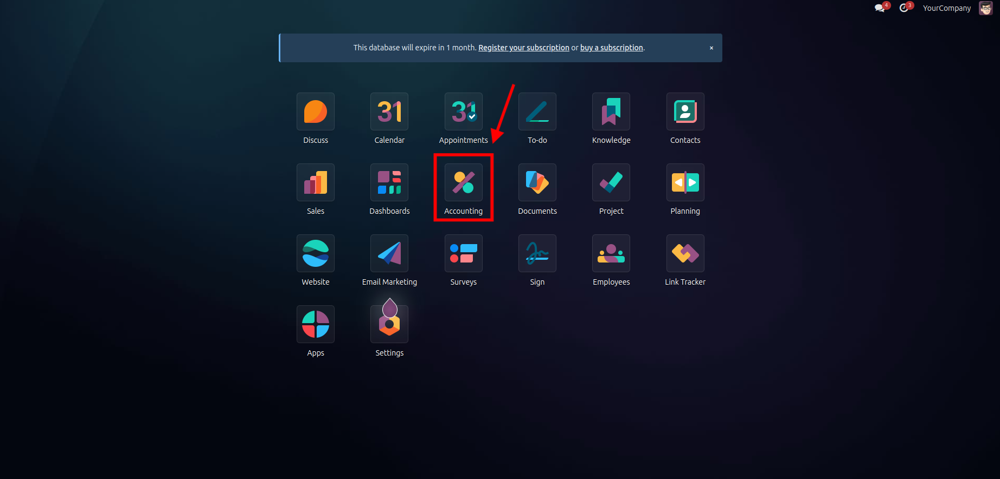
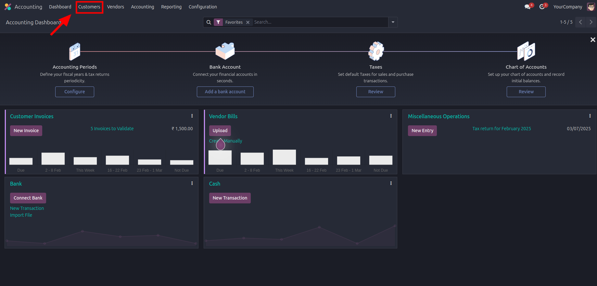
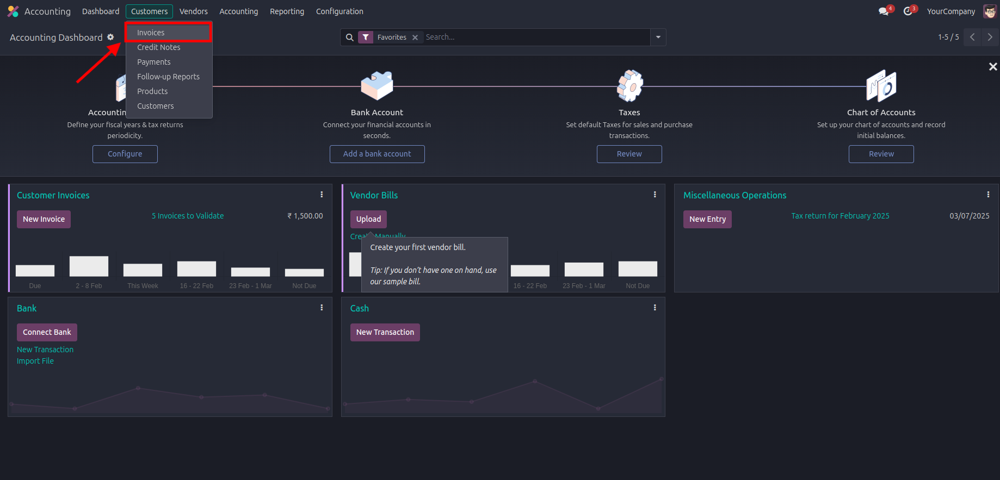
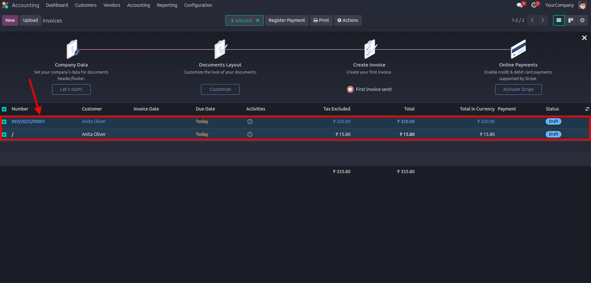
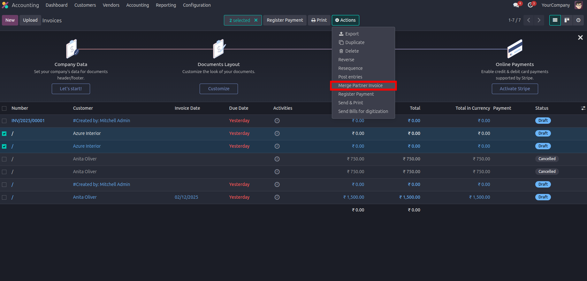
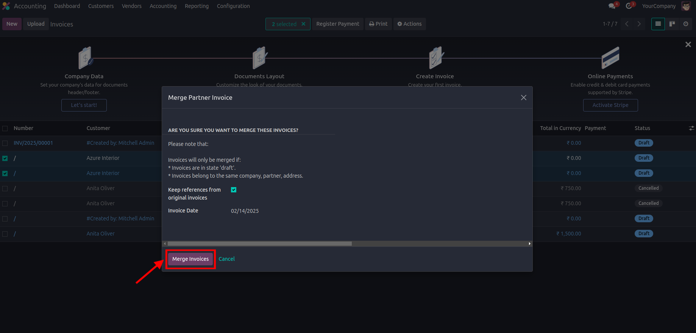
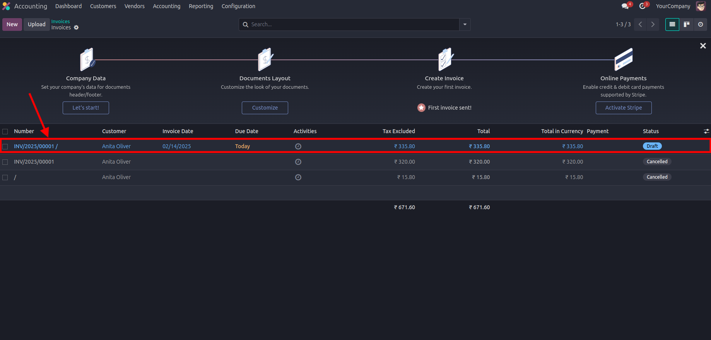

Consolidate multiple invoices into one seamless document in Odoo
With just a few clicks, users can select multiple invoices and merge them into a single invoice, eliminating the need for manual data entry and reducing errors.
The module automatically sums the amounts, taxes, and other details of all selected invoices, ensuring the merged invoice reflects the correct total.
Set criteria based on customer, product, or invoice type for merging, ensuring flexibility for different business needs.
After merging, users can review and finalize the invoice before confirming the document, giving more control over the process.
The module integrates smoothly with Odoo's accounting system, making it simple to maintain accurate financial records and reports.
Every merge operation is tracked, ensuring full transparency and compliance.
Follow these steps to get started:
Step 1: Navigate to the Accounting Module in Odoo.

Step 2: Navigate to the Customers menu in Odoo.

Step 3: Under Customers menu Navigate to Invoices.

Step 4: Select the Invoices which are
going to merge together.
The Invoices should be in draft and with same Partner

Step 5: Click on Actions On Top and Navigate and Click to Merge partner Invoice.

Step 6: After shows up Popup and Select the Date and Click on Merge Invoices.

The New Invoice will be Generated by Combining the Selected Invoices To Merge.
